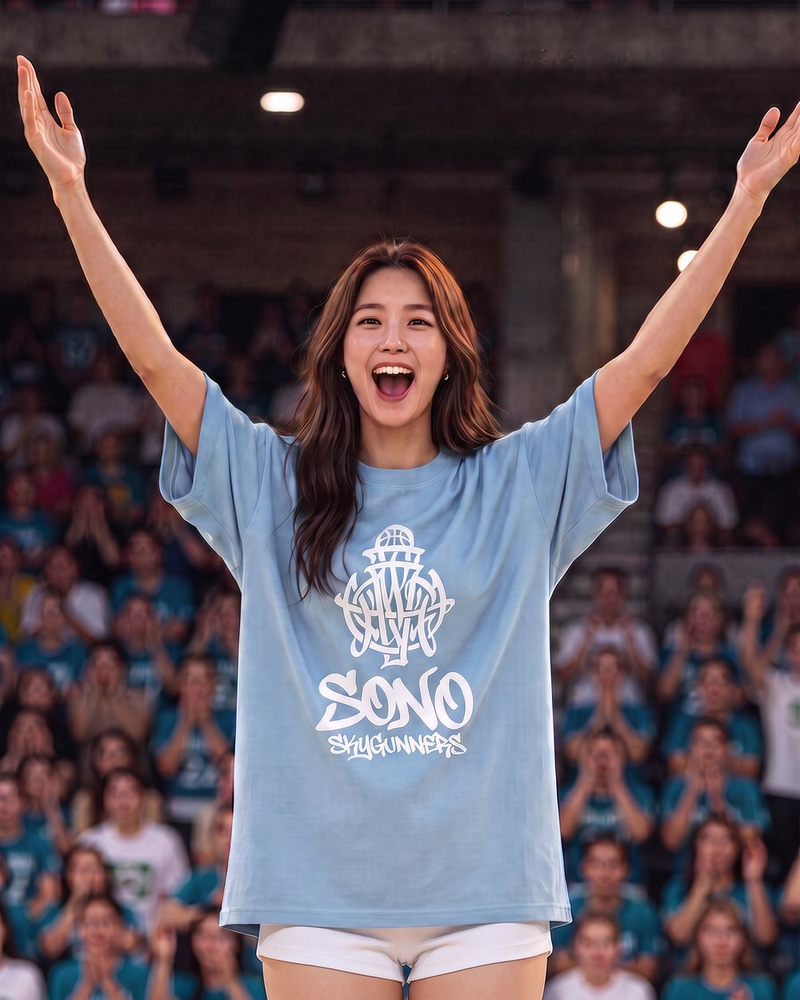
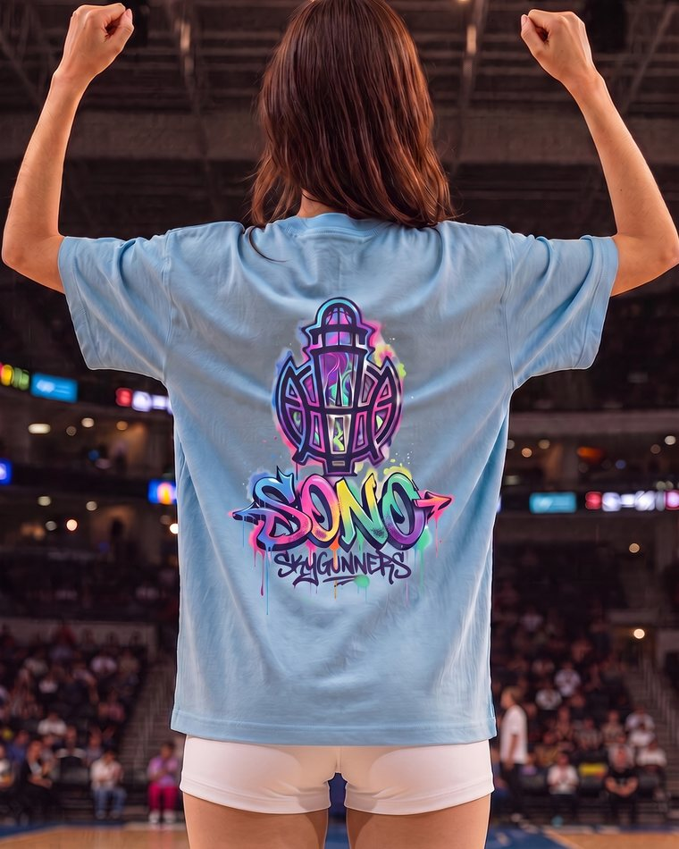
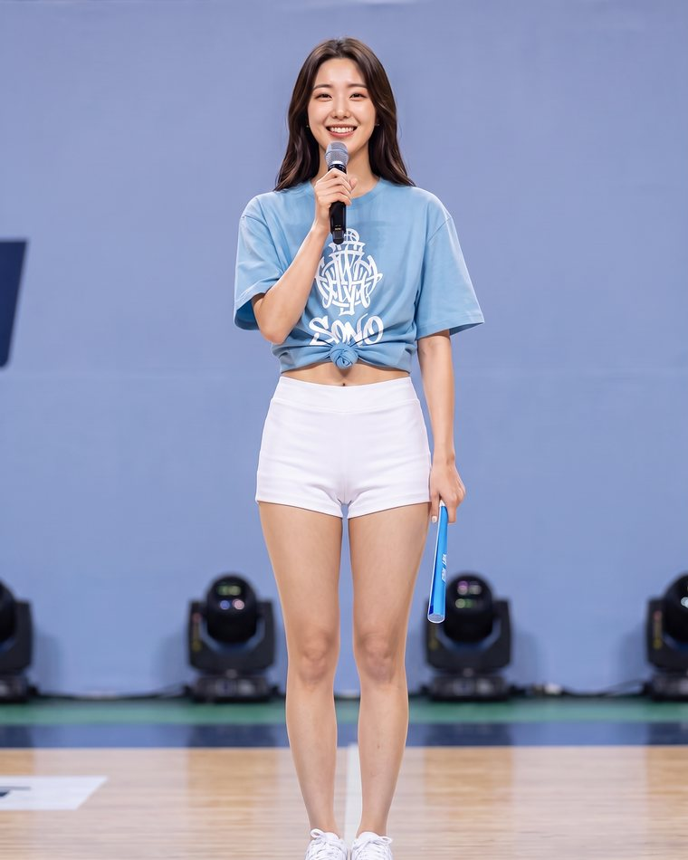
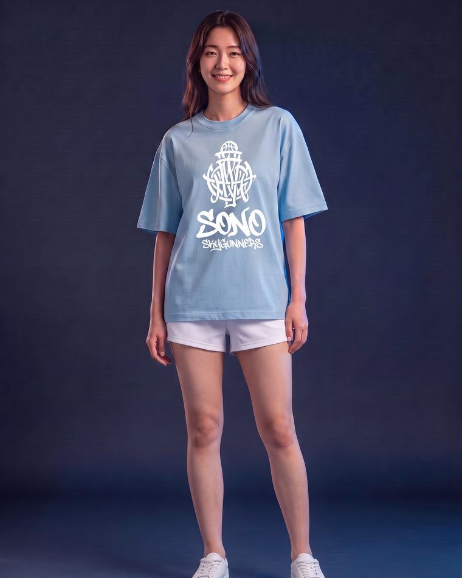
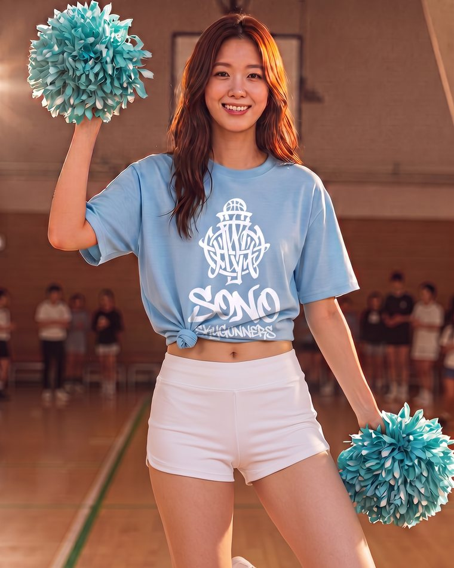
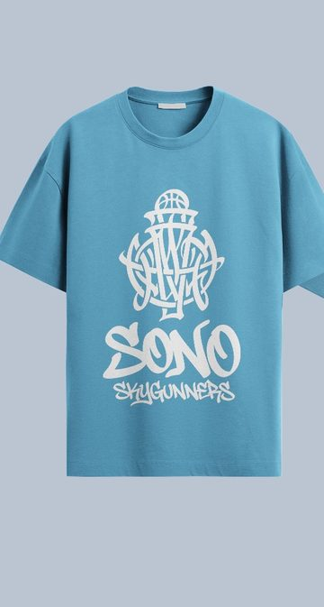
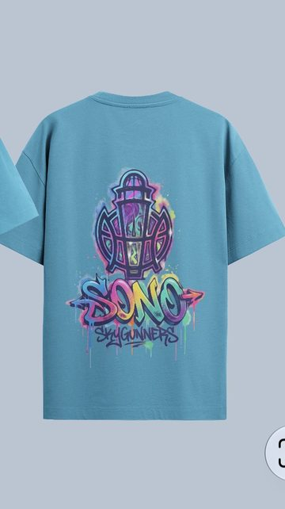
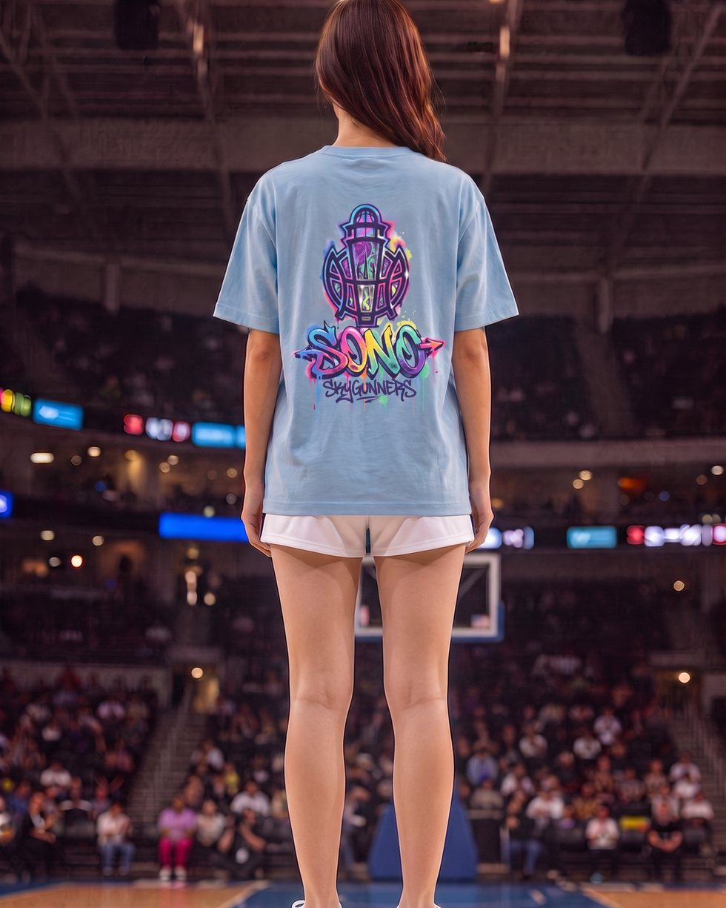
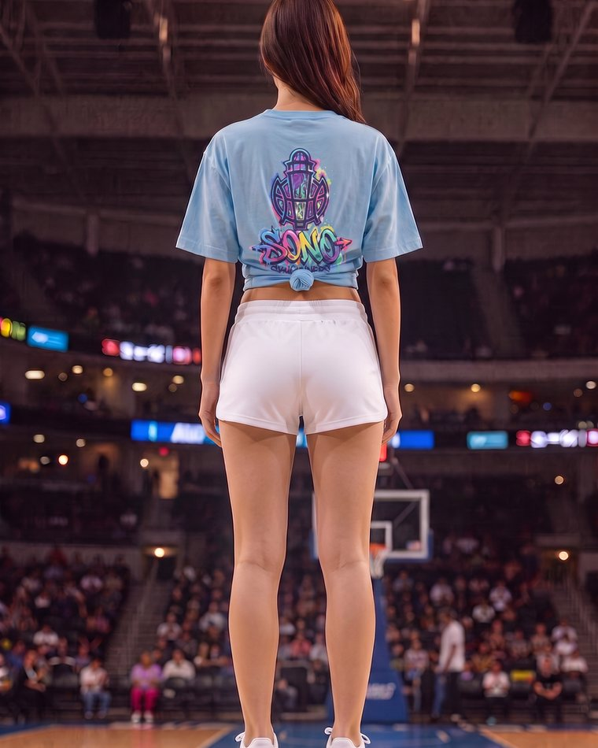
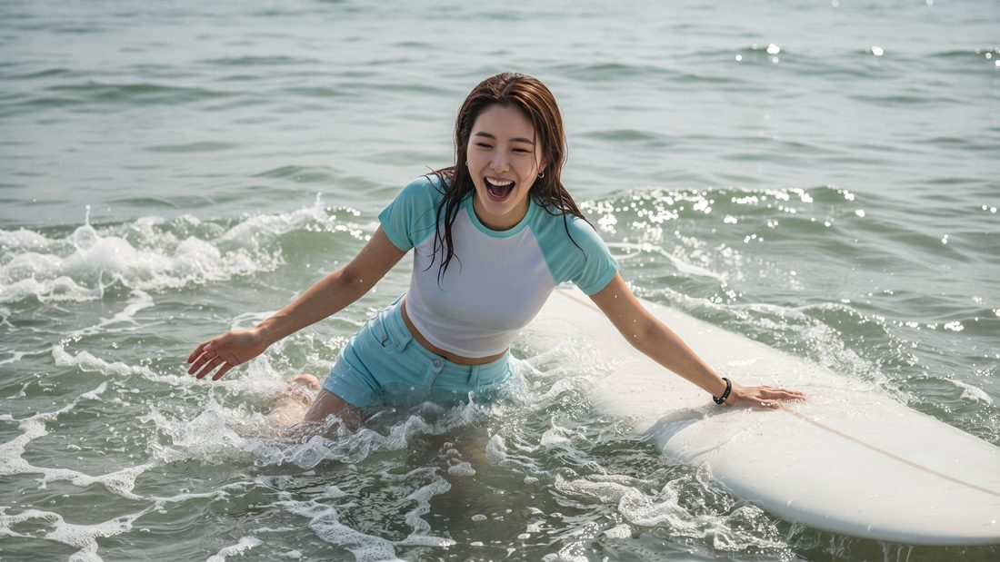

리아는 A.P LocaLift의 AI 인플루언서입니다. K뷰티 리뷰와 지역 아카이브로 자기 채널을 운영해 온 얼굴입니다.
그 리아를 경기장에 세워봤습니다. 응원을 이끌고, 이벤트를 진행하고, 굿즈를 입고, 팬 콘텐츠를 만듭니다.
여기서 다루는 이벤트는 전부 온라인 이벤트입니다 — 오프라인 현장 행사가 아닙니다.
아래는 SONO SKYGUNNERS 유니폼으로 실제 수행한 결과물입니다. 티셔츠를 소개하는 페이지가 아니라,
리아가 구단 마케팅을 어디까지 맡을 수 있는지 보여주는 페이지입니다.

보통 구단은 치어리더, 이벤트 MC, 굿즈 모델, SNS 콘텐츠 담당을 각각 섭외합니다. 리아는 그 네 자리를 같은 얼굴로 채웁니다. 시즌 내내 톤이 흔들리지 않고, 경기 다음 날이 아니라 그날 밤에 콘텐츠가 나옵니다.
구단 마케팅은 사진 한 장이 아니라 역할의 묶음입니다. 응원석을 달구는 사람, 마이크를 잡는 사람, 굿즈를 입는 사람, 매일 SNS를 채우는 사람. 리아는 이 네 자리를 한 얼굴로 수행합니다. 현장 대응 컷은 아래에서 이어집니다 →




역할이 넓어져도 구단 자산은 고정입니다. SONO SKYGUNNERS 굿즈는 스카이블루 바디에 앞면 흰색 로고, 뒷면 레인보우 컬러 로고 조합입니다. AI가 로고를 다시 그리거나 색을 임의로 바꾸는 순간 그것은 더 이상 구단의 굿즈가 아닙니다. 그래서 아트워크 원본 파일을 레퍼런스로 직접 물려 인쇄 위치·크기·색을 고정했습니다. 구단 승인 없이 디자인이 변형되는 일은 없습니다.

앞면 — 화이트 로고
뒷면 — 레인보우 컬러 로고역할마다 쓰일 자리가 다릅니다. 그래서 컷마다 네 개 비율로 잘라 드립니다. 웹에 바로 얹히는 상태로 나갑니다.
4:5 카드1:1 썸네일 16:9 배너9:16 숏폼
WebP·JPG 이중 포맷, 폴백 이미지, 반응형 스니펫과 적용 가이드를 함께 넘깁니다. 개발자가 파일명을 고칠 일이 없도록 명명 규칙을 고정했습니다.
제자리에서 한 바퀴 도는 360° 착용 숏폼, 응원 콜 릴스, 온라인 이벤트 고지 영상. 리아는 이미 뮤직비디오를 만든 캐릭터라 영상 톤이 이미 잡혀 있습니다.
관중석에 앉으면 앞사람의 등이 보이고, 중계 카메라는 코트를 등지고 선 사람의 뒷모습을 잡습니다. 응원석 무드컷은 캐주얼한 착장이 더 맞고, 굿즈 상세컷은 프린트가 정직하게 보여야 합니다. 마케팅 담당자가 필요한 각도와 착장을 말하면 그 상태로 나옵니다 — 그게 모델이 아니라 마케팅을 아는 인플루언서와 일할 때 생기는 차이입니다.


같은 티셔츠를 기본핏·앞 묶음·뒤 묶음으로 바꿔 입습니다. 옷을 새로 만드는 게 아니라 착장만 바꾸는 것이라 구단 자산은 그대로 유지되면서 콘텐츠 톤은 공식 → 캐주얼까지 넓어집니다.
어느 각도에서든 프린트는 구단이 준 아트워크 파일을 그대로 레퍼런스로 물려 생성했습니다. 엠블럼 형태, SONO 레터링의 그라데이션, 흘러내리는 페인트 질감까지 원본과 동일합니다.
모든 컷을 4:5 카드 · 1:1 썸네일 · 16:9 배너 · 9:16 숏폼 네 비율로 잘라 WebP·JPG 두 포맷으로 넘깁니다. 상세페이지·SNS·배너에 파일을 다시 만들 일이 없습니다.
구단 홍보가 설득력을 갖는 이유는 리아에게 이미 자기 콘텐츠가 있기 때문입니다. 리아의 첫 뮤직비디오는 지역을 배경으로 한 드라마 형식으로 제작했습니다. 팬은 광고를 기억하지 않지만 캐릭터는 기억합니다.

모델 섭외비, 스튜디오, 헤어메이크업, 촬영 인력, 우천 순연에 따른 재촬영이 전부 빠집니다. 시즌 내내 콘텐츠를 뽑아야 하는 구단에게 이 차이는 한 컷이 아니라 한 시즌 단위로 쌓입니다.
승리 직후, 트레이드 발표 직후, 굿즈 발매 직전. 스포츠 콘텐츠의 수명은 몇 시간입니다. 촬영 일정을 잡는 동안 타이밍은 지나갑니다. 저희는 그 자리에서 만듭니다.
사생활 논란, 계약 분쟁, 초상권 재협상, 소속사 이동이 없습니다. 구단 이미지에 얼굴 한 명의 리스크를 묶어두지 않아도 됩니다. 캐릭터는 구단과 함께 남습니다.
같은 그룹 안에 리조트와 구단이 있다면 캠페인을 따로 돌릴 이유가 없습니다. 경기장에서 응원하는 리아와 리조트에서 머무는 리아는 같은 얼굴입니다. 홈경기 관전 + 숙박 패키지처럼 두 사업부를 하나의 콘텐츠로 묶는 제안이 가능합니다. A.P LocaLift의 K-Stay Boost(제4축)와 Sports Boost(제5축)는 원래 같은 엔진을 씁니다.
BASIC — 단건. 컨셉 4컷 × 4비율 + 적용 가이드.
STANDARD — 단건 확장. 스틸 세트 + 360° 숏폼 + 카피 제안.
SEASON — 월 구독. 시즌 내내 경기·온라인 이벤트 주기에 맞춰 콘텐츠를 계속 공급합니다.
구단 규모와 사용 범위에 따라 견적을 조정합니다.